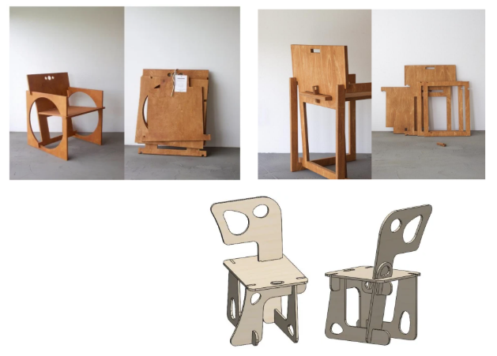
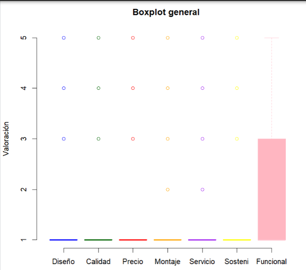
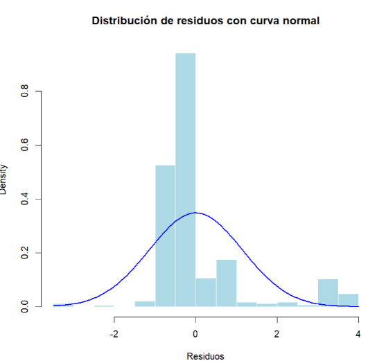
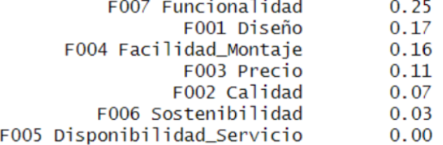

Data Interpretation and Product Validation
Reviews of IKEA chair products were analyzed using RStudio. Seven criteria were evaluated:

Rejected perceived quality
Negative price perception
Assembly problems
Satisfied with functionality
Extremely skewed distribution. It only works for a very small niche.
Even users who accept the design perceive material quality as disappointing.
Complete collapse at level 1. Users perceive price as a critical failure.
Most users fail during assembly, but a small group succeeds.
Users do not perceive the product as environmentally friendly.
The only positive criterion. 18.8% of users are completely satisfied.

After normalizing the data, the following weights were obtained:
Critical priority and dominant axis of the project.
High priority related to aesthetics and structure.
Central aspect of user experience.
Moderate priority.
Low influence in purchasing decisions.

With p-value < 0.05, the null hypothesis is rejected.
The model is statistically significant, meaning that there are significant differences among the analyzed criteria.
Kolmogorov-Smirnov test results:
D = 0.28493, p-value < 2.2e-16
Residuals do not follow a normal distribution. The histogram presents a leptokurtic shape with a right tail.
